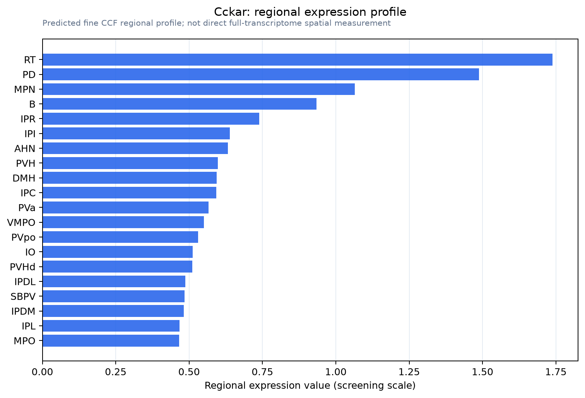

Cckar
Cholecystokinin receptor type A (CCK-A receptor) (CCK-AR) (Cholecystokinin-1 receptor) (CCK1-R)
Spatial tier: REGION_BIASED · Class: GPCR · Top region: RT (Reticular nucleus of the thalamus) · Positive regions: 29/554
45.8Discovery Score
40.4Targetability Score
CEvidence grade C
What this means: Cckar: fine CCF profile is region-biased toward RT (top regions: RT, PD, MPN, B, IPR); this is a discovery lead, not direct proof.
Direct spatial evidence
MERFISH REGION LOCATOR

Regional expression figure

Predicted WMB × fine-CCF profile; not direct full-transcriptome spatial measurement.
Spatial profile
Evidence and specificity
- Evidence status
- PREDICTED_FINE
- Direct sources
- None; predicted localization only
- Exclusive threshold
- 12 positive regions out of 554
- Spatial specificity
- 0.330
- Top-region fraction
- 0.065
- Filter status
- PASS
Interpretation limits
- Cell-type-to-region projection is imputed expression, not direct spatial measurement.
- Adult reference atlases do not establish stability across age, sex, strain, state, or disease.
- Transcript abundance does not guarantee protein abundance or genetic-tool performance.